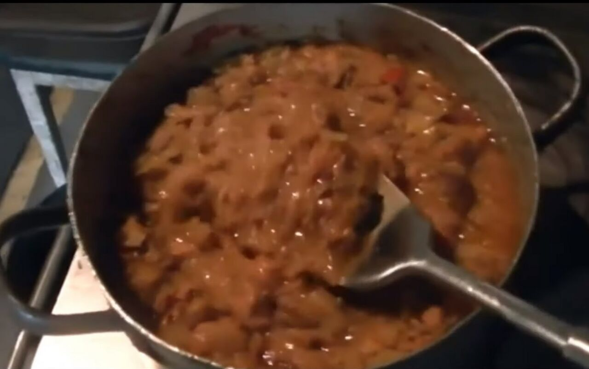

Bigos po bombasku

Opis
Bigos po bombasku (bomb. bibos) – tradycyjna dla kuchni bombaskiej i regionu Suchodolszczyzny potrawa z kapusty oraz mięsa, tuszona z dodatkiem mandarynek i bananów, czasami także rodzynek.
Składniki
- kapusta kiszona (wiejska)
- pietruszka
- seler
- marchew
- boczek wędzony
- kiełbasa
- czosnek
- cebula
- banany
- myndyrynki
- koncentrat pomidorowy
- jabłko
Wykonanie
- Pokroic wszystkie skladniki
- podsmazyc cybulke z kielbaskq i boczkiem
- Wrzucic wszystko do duzego gara
- Dodac banany, jablko i myndyrynki
- Tuszyc
Wstecz